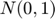
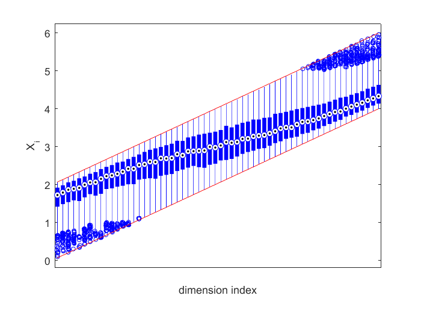

Truncated Multivariate Student & Normal Toolbox
Main functions in this toolbox include.
- mvNcdf(l,u,Sig,n), which uses a Monte Carlo sample of size to estimate the cumulative distribution function, , of the -dimensional multivariate normal with zero-mean and covariance , that is, ;
- mvNqmc(l,u,Sig,n) provides a Quasi Monte Carlo algorithm for medium dimensions (say, ), in addition to the faster Monte Carlo algorithm in mvNcdf;
- mvrandn(l,u,Sig,n) simulates random vectors , conditional on ;
- norminvp(p,l,u) computes the quantile function at of the univariate  distribution truncated to , and with high precision in the tails;
- trandn(l,u) is a fast random number generator from the univariate distribution truncated to .
- mvTcdf(l,u,Sig,nu,n), which uses a Monte Carlo sample of size to estimate the cumulative distribution function, , of the -dimensional multivariate student with zero-mean and covariance and degrees of freedom , that is, ;
- mvTqmc(l,u,Sig,nu,n) provides a Quasi Monte Carlo algorithm for medium dimensions (say, ), in addition to the faster Monte Carlo algorithm in mvTcdf;
- mvrandt(l,u,Sig,nu,n) simulates random vectors , conditional on ;
- tregress(l,u,Sig,df,n) simulates pairs, , so that , conditional on ;
Reference: Z. I. Botev (2017), The Normal Law Under Linear Restrictions: Simulation and Estimation via Minimax Tilting, Journal of the Royal Statistical Society, Series B, Volume 79, Part 1, pp. 1-24
Contents
- mvNcdf(l,u,Sig,n) - multivariate normal cumulative distribution
- mvNqmc(l,u,Sig,n) - multivariate normal cumulative distribution (Quasi Monte Carlo)
- mvrandn(l,u,Sig,n) - truncated multivariate normal generator
- norminvp(p,l,u) - normal quantile function with tail-precision
- trandn(l,u) - fast truncated normal generator
- mvTcdf(l,u,Sig,nu,n) - multivariate student cumulative distribution
- mvTqmc(l,u,Sig,df,n) - multivariate student cumulative distribution (Quasi Monte Carlo)
- mvrandt(l,u,Sig,df,n) - truncated multivariate normal generator
- tregress(l,u,Sig,df,n) - truncated student for Bayesian regression simulation
mvNcdf(l,u,Sig,n) - multivariate normal cumulative distribution
- Suppose we wish to estimate , where is a full rank matrix and .
d=10;Sig=gallery('randcorr',d);mu = ones(d,1);l=-rand(d,1);u=rand(d,1);A=rand(d,d);
We simply compute , where
est=mvNcdf(l-A*mu,u-A*mu,A*Sig*A',10^4)
est =
prob: 5.9940e-06
relErr: 0.0038
upbnd: 9.9219e-06
- Consider the following large-scale example with known probability of
d=10^3;l=zeros(d,1);u=Inf(d,1);Sig=0.5*eye(d)+.5*ones(d,d); est=mvNcdf(l,u,Sig,10^4)
est =
prob: 9.9873e-04
relErr: 0.0103
upbnd: 0.0030
compare est.prob with exact value by computing relative error
abs(est.prob-1/(d+1))*(d+1)
ans = 2.6919e-04
mvNqmc(l,u,Sig,n) - multivariate normal cumulative distribution (Quasi Monte Carlo)
Compare errors using pseudo-random and quasi-random implementation for small to medium .
d=20;l=zeros(d,1);u=Inf(d,1);Sig=randn(d,d);Sig=Sig*Sig'; estqmc=mvNqmc(l,u,Sig,10^5), est=mvNcdf(l,u,Sig,10^5)
estqmc =
prob: 1.6446e-07
relErr: 0.0012
upbnd: 1.0199e-06
est =
prob: 1.6390e-07
relErr: 0.0032
upbnd: 1.0199e-06
mvrandn(l,u,Sig,n) - truncated multivariate normal generator
- Suppose we wish to simulate a bivariate , conditional on
Sig=[1,0.9;0.9,1];mu=[-3;0];l=[-Inf;-Inf];u=[-6;Inf];A=[1,-1;0,1];
Simulate conditional on and then set .
n=10^3;Y=mvrandn(l-A*mu,u-A*mu,A*Sig*A',n); X=repmat(mu,1,n)+A\Y; plot(X(1,:),X(2,:),'r.'), xlabel('X_1'), ylabel('X_2'), hold on
Now superimpose the samples from the unconstrained Gaussian.
x=repmat(mu,1,n)+chol(Sig,'lower')*randn(2,n); plot(x(1,:),x(2,:),'.')
- Large-scale example with strong positive correlation.
d=60;n=10^3; Sig=0.9*ones(d,d)+.1*eye(d); l=(1:d)/d*4;u=l+2; X=mvrandn(l,u,Sig,n);
Plot the boxplots of the -marginal distributions together with their truncation limits.
boxplot(X','plotstyle','compact'),set(gca,'XTickLabel',{''}), xlabel('dimension index'),ylabel('X_i'),hold on, plot(1:d,l,'r',1:d,u,'r')
norminvp(p,l,u) - normal quantile function with tail-precision
Suppose we wish to simulate a random variable conditional on  using the inverse transform method:
using the inverse transform method:
d=10^5;l=9*ones(d,1);u=9.5*ones(d,1);mu=1;sigma=1; X=norminvp(rand(d,1),(l-mu)/sigma,(u-mu)/sigma); Z=mu+sigma*X;
Now plot a histogram of the result.
hold off, histogram(Z)
trandn(l,u) - fast truncated normal generator
Simulate samples with different truncation points.
l=rand(10^6,1)*70; u=Inf(10^6,1); tic trandn(l,u); toc
Elapsed time is 0.093202 seconds.
Compare speed of fast generator with that of norminvp.m, the latter being useful for Quasi Monte Carlo estimation.
tic norminvp(rand(size(l)),l,u); toc
Elapsed time is 1.044950 seconds.
mvTcdf(l,u,Sig,nu,n) - multivariate student cumulative distribution
- Comparison with Matlab's default routine
d=20;l=ones(d,1)/2;u=ones(d,1);df=400;Sig=inv(0.5*eye(d)+.5*ones(d,d));
est=mvTcdf(l,u,Sig,df,10^4) % output of our method
est =
prob: 1.7743e-37
relErr: 0.0048
upbnd: 2.8537e-37
Now execute Matlab's toolbox\stats\stats\mvtcdf.m and verify that with it is slow and inaccurate.
options=optimset('TolFun',0,'MaxFunEvals',10^6,'Display','iter'); [prob,err]=mvtcdf(l,u,Sig,df,options)
estimate error estimate function evaluations --------------------------------------------------- 9.9174e-50 3.47110e-49 8650 1.4476e-49 3.37255e-49 21800 1.8365e-49 3.19202e-49 41650 2.1336e-49 2.84387e-49 71300 2.1917e-49 2.84086e-49 116650 2.2231e-49 2.84009e-49 184700 2.6081e-49 2.70221e-49 287350 2.6262e-49 2.70195e-49 441300 2.7106e-49 2.69638e-49 672350 Warning: Unable to achieve error tolerance of 0 in 1000000 function evaluations. Increase the maximum number of function evaluations, or the error tolerance. prob = 2.7106e-49 err = 2.6964e-49
mvTqmc(l,u,Sig,df,n) - multivariate student cumulative distribution (Quasi Monte Carlo)
Compare errors using pseudo-random and quasi-random implementation for small to medium .
est=mvTqmc(l,u,Sig,df,10^4) % QMC version est=mvTcdf(l,u,Sig,df,10^4) % ordinary Monte Carlo version
est =
prob: 1.7826e-37
relErr: 4.7910e-04
upbnd: 2.8537e-37
est =
prob: 1.7717e-37
relErr: 0.0048
upbnd: 2.8537e-37
mvrandt(l,u,Sig,df,n) - truncated multivariate normal generator
- Large-scale example with strong positive correlation.
d=60;n=10^3; Sig=0.9*ones(d,d)+.1*eye(d); l=(1:d)/d*4;u=l+2; df=10; X=mvrandt(l,u,Sig,df,n);
Plot the boxplots of the -marginal distributions together with their truncation limits.
boxplot(X','plotstyle','compact'),set(gca,'XTickLabel',{''}), xlabel('dimension index'),ylabel('X_i'),hold on, plot(1:d,l,'r',1:d,u,'r')
tregress(l,u,Sig,df,n) - truncated student for Bayesian regression simulation
- simulates random pairs, , such that has the same distribution as , conditional on . For example, we can repeat the above experiment as follows.
d=60;n=10^3; Sig=0.9*ones(d,d)+.1*eye(d); l=(1:d)/d*4;u=l+2; df=10; [Z,R]=tregress(l,u,Sig,df,n); X=bsxfun(@rdivide,sqrt(df)*Z,R);